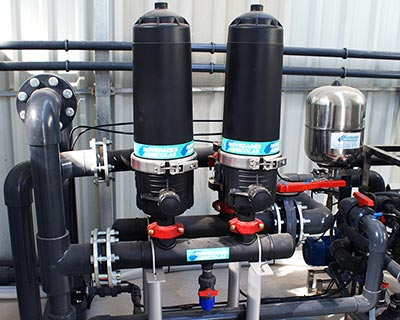

Filtros Para Riego por Goteo
Uno de los inconvenientes que presenta una instalación de riego por goteo es el riesgo de obturación de los emisores, por lo que se utilizan una serie de filtros en las instalaciones para separar las partículas que contiene el agua de riego que puede provocar esta obturación.
Tipos de Filtros para Riego por Goteo
Los filtros se clasifican en los siguientes tipos:
Filtros de área:
Se utilizan para separar materiales orgánicos como algas y partículas gruesas gracias a una gruesa capa de arena silícea contenida en el filtro a través de la cual se hace pasar el agua a filtrar.
Hidrociclones:
Realizan la separación de partículas del agua mediante el efecto de la fuerza centrífuga generada por el torbellino, de manera que las partículas pesadas como las arenas que puede contener el agua de riego se desplazan hacia las paredes cayendo después al depósito sitúalo en la parte inferior.
Se utilizan cuando se tienen arenas en suspensión que aparecen en aguas de pozos profundos.
Filtros de malla:
El agua es filtrada por una malla, la cual se define por el número de aperturas por pulgada lineal o número de mesh. Las partículas de tamaño superior a las aperturas de la malla quedan retenidas en el filtro.
Son efectivos para aguas poco sucias con materiales de origen inorgánico del tamaño de limos o arenas.
Los filtros de mallas se presentan en tres modalidades, según el sistema de limpieza que tengan, manual, semiautomáticos y automáticos.
Filtros de anillas:
Este sistema cuenta con un conjunto de anillas ranuradas que se comprimen las unas contra las otras formando un cilindro filtrante de manera que el agua pasa por las pequeñas ranuras entre las anillas quedando atrapados en el filtro las partículas de mayor tamaño al de las ranuras.

Son apropiados para la limpieza de aguas de mediana a mala calidad. Las anillas pueden ser de diferentes diámetros de paso, así encontramos que cada tipo de anilla tiene un color asociado.
Los filtros de anillas se presentan en tres modalidades:
- Según el sistema de limpieza que tengan
- Manual
- Automáticos.
Estos equipos pueden poseer sistemas autolimpiantes, los cuales realizan la limpieza mediante operaciones de contralavado automático o de manera manual en el caso de los filtros de malla, anillas e hidrociclones.
Los sistemas semiautomáticos tienen mecanismos que limpian mediante operaciones de contralavado a través del accionamiento de dicho mecanismo.
/Filtros-de-Riego.jpg)